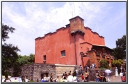
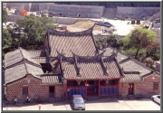

|
台北縣目前(94.9.30)總共有五十一個古蹟景點，淡水地區就有二十三個古蹟一個歷史建築，居北縣之冠；像是一級的紅毛城，二級的滬尾砲台、鄞山寺、理學堂大書院，三級的龍山寺、福佑宮、馬偕墓、前清淡水總稅務司官邸等，這些古蹟點都是一座座認識、傳承先人智慧的知識寶庫。淡水二十
三個古蹟為淡水紅毛城、鄞山寺、
理學堂大書院、
滬尾砲台、淡水龍山寺、淡水福佑宮、前清淡水關稅務司官邸、馬偕墓、淡水水上機場、淡水氣候觀測所、原英商嘉士洋行倉庫、滬尾湖南勇古墓、淡水公司田溪橋遺跡、淡水禮拜堂、滬尾偕醫館、淡水外僑墓園、海關碼頭、關渡媽祖石、滬尾水道、
雙圳頭水源地、多田榮吉故居、崎仔頂施古厝、程氏古厝。
在這二十四個古蹟中，與我們最深切的及最親近的古蹟並不是一級的紅毛城，二級的滬尾砲台、鄞山寺、理學堂大書院，而是每天與我們相處的
大石頭，它如同一位24小時的警衛叔叔，長年不眠不休地陪伴著我們學習、成長，替我們守護著這美麗的校園，那就是我們的「
關渡媽祖石」。在我們圍繞著媽祖石玩耍嬉戲的同時，同時學習媽祖石歷史文化。細心的詳讀媽祖石上的碑文。原來一直陪伴我們的媽祖石竟然也有許許多多的傳說。讓我們一起來關心我們的媽祖石和我們家鄉的故事吧！ |
|
 |
| 紅毛城 |
|
|
| 淡水禮拜堂 |
|
|
| 淡水福佑宮 |
|
 |
| 鄞山寺 |
 |
| 崎仔頂施家古厝 |
 |
| 讓我們一起來關心我們的媽祖石和我們家鄉的故事吧! |
|
|